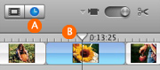

Fine-tuning where a clip begins and ends
You can adjust the length of a clip by dragging one of its edges in the timeline viewer. This is called "direct trimming."
IMPORTANT: You can't use direct trimming if you're showing clip volume levels. To hide clip volume levels, deselect Show Clip Volume Levels in the View menu. (A selected item has a checkmark next to it; choose the item again to deselect it.)

To trim a video clip using direct trimming:
- If necessary, choose iMovie HD > Preferences, click the General button, and select the "Snap to items in Timeline" checkbox.
- Click the Timeline Viewer button (A, shown above).
- Select the clip you want to edit in the timeline viewer by clicking it.
- Drag the playhead (B, shown above) to the frame where you want the clip to begin or end.
- Position the pointer over the end of the clip until you see the pointer change (A, below).
- Drag the end of the clip to the "ghosted" playhead (B, below) to remove the frames that you want trimmed. A yellow line appears and the edge of the clip automatically "snaps" against the edge of "ghosted playhead" when you reach the frame you selected in step 4.
- Repeat the procedure on the other end of the clip, if you want.
Tip: To precisely adjust the playhead position, press the Left or Right Arrow key to move the playhead one frame at a time. To move the playhead in ten-frame increments, hold down the Shift key while pressing the arrow key.

When you drag the edge of a clip, the adjoining clips move (or "ripple") along with it. Therefore, if you shorten or lengthen a clip, you shorten or lengthen your entire movie.
To shorten or lengthen a clip without allowing other clips to shift, hold down the Command key while you drag the clip's edge. This technique allows you to trim clips without affecting the length of your movie. When you shorten a clip, an empty space is left; when you lengthen the clip, you cover up some footage in the adjacent clip.
When trimming a clip, keep in mind that iMovie HD only hides the footage you don't want to show and doesn't actually remove or delete it. If you trim away too much, you can always choose Edit > Undo to cancel your change, or extend the clip back to the desired length by dragging one of its edges in the timeline viewer.
You can tell at a glance if a clip has been trimmed. Full clips have rounded corners in the timeline viewer, while trimmed clips have straight ends and sharp corners.
You can also adjust the length of a clip by cropping it. For more information, see Related Topics below.
Related Topics
There's a space after I move a clip
Changing the length of an audio clip
 Was this page helpful? Send feedback.
Was this page helpful? Send feedback.